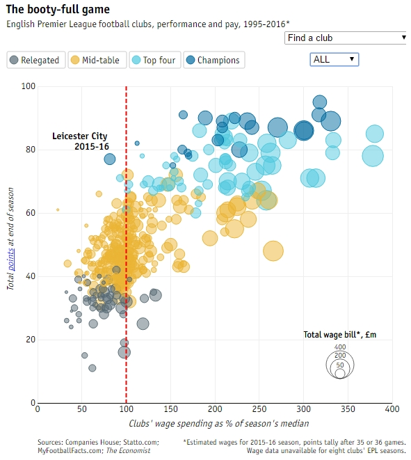
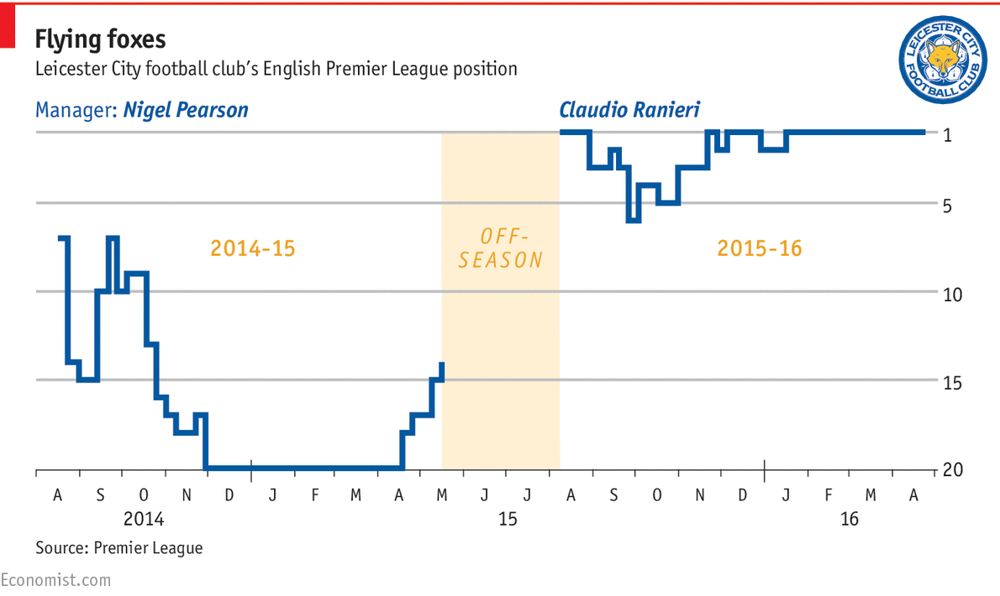
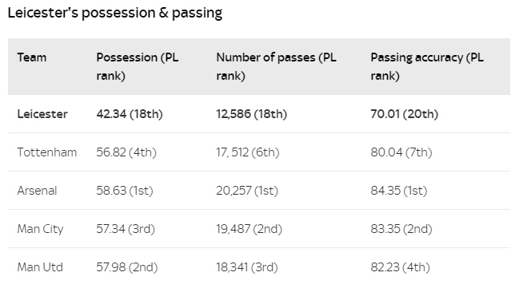
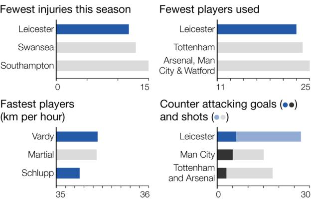

JAN 3 2017
Leicester City FC - Improbable Winners
By Jiho Tahk
Soccer > Data Analysis
At the beginning of the 2015-16 season, Leicester City were 5000:1 odds of winning the Premier League title. It may go down as the biggest Cinderella story in sporting history.

A soocer club in a town roughly the size of Wichita, Kansas, Leicester City were 5000 : 1 to win the Premier League. Coming off a promotion season where they barely survived relegation in their first year, Leicester City FC were expected by most experts to battle again to survive in top flight soccer. So it came as a huge surprise that they won the league, and many will study their methods to identify how they can achieve similar feats.
More so than in other sport leagues, the English Premier League favors the financially powerful and storied clubs like the Manchester United's and Chelsea's who can use their financial power to recruit the world's best players. Leicester doesn't belong in the same conversation with teams such as Arsenal, Chelsea, Manchester United/City, and Liverpool, yet this team finished above them all. The Leicester squad only cost £31m to put together - compare that to the £329m it cost to put together the Manchester United team, who finished 5th in the table! The graph illustrates the statistical outlier of this team, especially in the modern era where the transfer fees have skyrocketed in the EPL. Leicester is the only club in Premier League history to win the title while spending less than £100m on player wages. In some instances, the entire squad wages cost less than the transfer fee of one of the opposition team's players. This really puts into perspective the truly remarkable feat from just the financial viewpoint.
One of the main reasons for their success is their manager, Claudio Ranieri. Having recently replaced his predecessor, Nigel Pearson, Ranieri took over a team that barely escaped relegation the season before.
Looking at their season statistics, they were one of the worst passing teams in the EPL. The genius of Ranieri was that he realized that his team could not survive by going toe-to-toe with every team, but instead developed a strategy that suited his players and put them in the best position to be competitive. Given players such as Vardy, Mahrez, Kante, and Drinkwater, Ranieri implemented a guerrilla strategy of sitting deep, allow the opposition to have possession, and use their industry and speed to launch devestating counter-attacks. Morgan and Huth sat very deep to soak up the pressure, Kante created the interceptions, and Drinkwater would distribute over the top to Vardy or Mahrez. With this simple counter-attacking system, Leicester stayed near the top of the table for the entire duration of the season.
Another reasons was that Leicester suffered the fewest injuries of any team in the premeier league, resulting in a consistent team that played week in and week out. Only 18 Leicester players have started a league game (a league low) and eight have started at least 30 times (a league high). The squad stability meant each player had familiarity of everyone's styles and each knew their role. They also did not have the additional workload and distractions of cup competitions that their competitiors were involved in. They had the entire week to rest and prepare for their opposition.
Finally, the biggest teams all seemed to have a down year at the same time. Manchester United were rebuilding under a new manager, Chelsea were imploding, Manchester City and Liverpool had lame duck managers. Arsenal and Tottenham had their chance, but could not take advantage. In what could be considered the perfect storm of good fortune, great man-management, tactics, and impelementation - Leicester City's improbable win will go down as the greatest Cinderella story in sporting history.